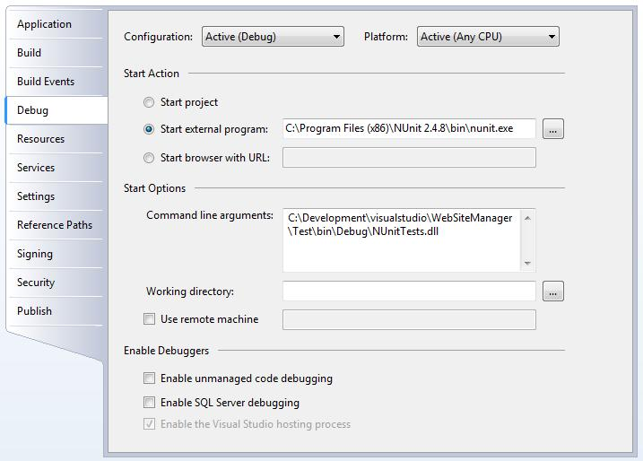
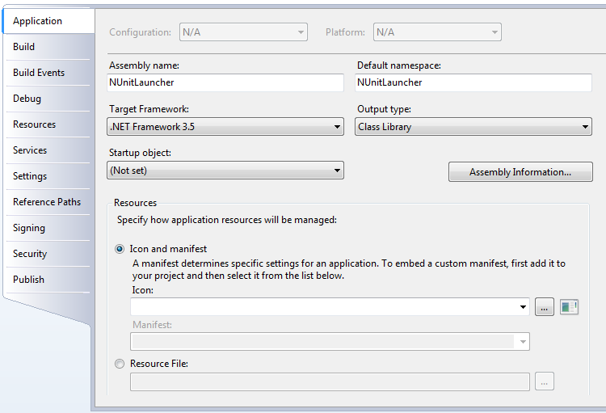

How to debug NUnit tests in Visual Studio
The tests will be part, normally, of a workspace solution that contains at least the project itself plus a secondary project with the NUnit tests files.
The best approach is to create a secondary project on the solution, called, for example, NUnitLauncher. To do, right click on the workspace in the Solution Explorer, select the option Add New Project, and choose Console Application. In this moment, the project will contain a single file, Program.cs, that can be safely removed.
Now, select the properties, debug tab, and select the Start external program option, entering the correct path to the NUnit executable, that, in my case, is: C:\Program Files (x86)\NUnit 2.4.8\bin\nunit.exe. Then, the command line arguments must contain the path to the debuggable DLL.

The created project should have a main entry, as it had been created as a console application. It can not be converted to a class library, which will avoid spurious compilation errors, like in:

Not it is possible to start the tests on debug mode by launching the new created project.